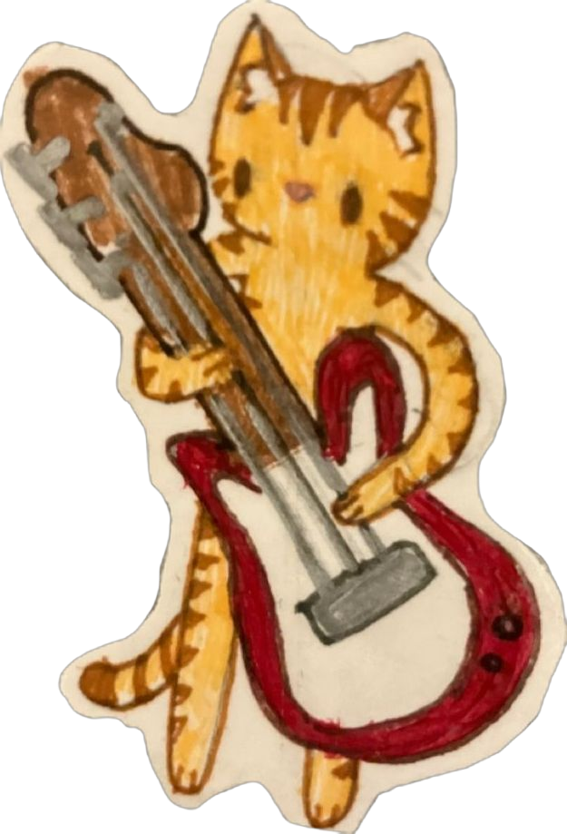
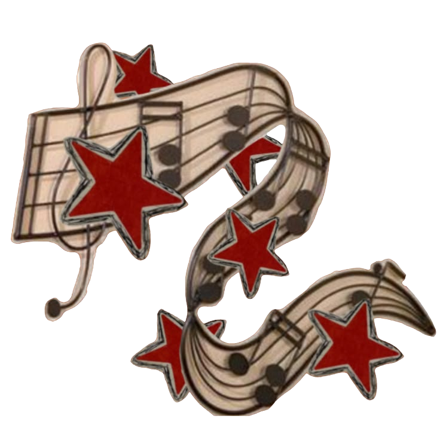
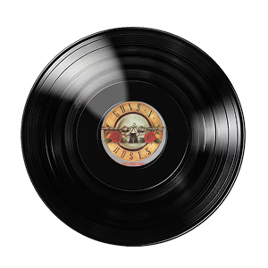

Sweet Child o Mine
Espero que te este gustando el detalle :D, como no iba a incluir rock y mas un solo de guitarra por lo visto te gustan bastante y recordando lo que me contaste que querias tener un estilo mas rockero definitivamente esta cancion seria tuya y cuando te vea en persona que espero sea pronto JAKDJAS se que sonara esta cancion en mi cabeza.
Eres tan hermosa ocmo este solo de guitarra :D de hecho si va bastante el estilo rockero contigo y mas en el aspecto que te patina el coco JAAJAJAJ, pero suerte que tengo pista de sobra para eso.




